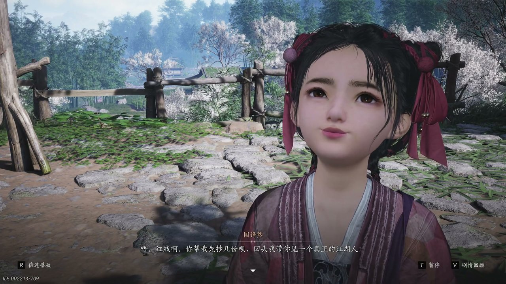

燕云背后的故事：第2集 第二集 伊刀

朋友们，上一集咱们说到——少东家竹林酣睡丢了镇冠珏、寒姨神色慌张锁了密室门、绣金楼的影子无声无息摸进了神仙渡。新来的朋友可能纳闷，这神仙渡到底是个什么地方？简单说，清河县外一个被梨树和酒香裹着的小地方，不羡仙酒馆就在这儿，寒姨是老板娘，少东家是她一手带大的小少爷。可他哪知道，自己脖子上挂了一辈子的那枚玉佩，早就把江湖上的豺狼引到了家门口。这不，寒姨一句“去瓷窑问问好”，就把少东家支进了那满地碎瓷、酒气冲天的窑口里，可他还没站稳脚跟呢，一抬头，就撞上了一双要人命的眼睛。

瓷窑这地方，白天进去都觉着阴冷。少东家一只脚刚踏进窑口，满地的碎瓷片就嘎吱嘎吱响个不停，青白色的釉面在昏暗里泛着冷光，踩上去心里直发毛。酒坛子横七竖八倒了一地，有的盖子掀翻在旁边，里头的酒液渗进干裂的黄土地，洇出一片片深褐色的湿痕，那股陈年酒味混着泥土的腥气直往鼻子里钻。少东家蹲下来捻了捻地上的湿泥，指尖碰到一片还没干透的脚印——有人来过，而且不止一个。“完了完了完了呀，韩娘子会撕了我的！”酒馆伙计缩在窑口外头直哆嗦，说是跟人比武去了，回来就成这样了。少东家皱着眉往里走了几步，满地的痕迹朝窑洞深处延伸，像是有什么东西被拖了进去。正琢磨着是谁下的手，深处突然传来一声闷哼——一个浑身血污的偷马贼靠在废弃的窑壁上，胸口剧烈起伏，嘴里含含糊糊喊着“别过来”。说实在的，看到这儿我心都揪起来了，荒郊野外撞见个半死不活的人，换我我早扭头跑了。还没等少东家蹲下去问个明白，身后一阵冷风刮过来，一个粗哑的声音贴着耳根子砸下来：“你是那个偷马贼啊？”少东家猛地回头，一个满脸横肉的汉子正拿刀指着他，眼珠子像鹰一样盯着他，嘴里吐出一句话来——“老子死人刀，一辈子没破过誓，今儿个你带我去找韩香寻，要不，我就一个个村杀过去。”

说这话的时候，死人刀的拇指在刀柄上轻轻蹭了蹭，那动作熟得像是摸惯了女人头发。少东家后脖颈子一阵发麻，手心全是汗，但他硬撑着没往后退。“韩姨不在不羡仙，你找她干什么？”他嗓子发干，声音都有点抖。死人刀咧嘴一笑，那笑容比哭还难看：“老子找她讨个东西，你带路就完事儿了。”少东家心里骂了句娘，面上还得稳住——这人光看那把刀和说话的语气就知道不是善茬，真跟他硬顶，死的不光是自己，连神仙渡那些街坊邻居都得陪葬。“行，”少东家咬了咬牙，“我带路，但你得发誓不动我的人。”死人刀哼了一声，眼皮子都懒得抬：“这种玩意儿也配让老子发誓？”你瞧瞧，这话说得比刀还利索。少东家没再多说，转身往外走的时候，背上那两道视线像是钉子一样扎得他骨头生疼。他心里清楚，这哪是带路啊，这是把一头狼往自家院子里引。得想办法甩掉他，至少得抢在到不羡仙之前。

趁死人刀处理那个偷马贼的功夫，少东家脚底抹油溜回了医馆。豆豆正趴在柜台上抄方子，一见他进来立马跳了起来：“少东家你可回来了！今早寒娘子和师父两人逼供，我差点没招架住！”少东家哪有心思听这些，他一把拽住豆豆的袖子：“天不收呢？在不在二楼？”豆豆眨巴着眼说：“二楼常年锁着，我师父不让人进，可今天奇了怪了，锁不知道被谁开了。”少东家二话不说摸上楼梯，推开那扇吱呀作响的木门——一股陈年的药味混着潮湿的泥土气息迎面扑来，呛得他连咳了好几声。楼梯往下延伸，越走越暗，墙面上全是一道道指甲刮出来的痕迹，深得能嵌进指节。走到最底下，少东家的脚猛地顿住了——狭小的地下空间里，歪歪斜斜坐着好几个人，他们脸上缠着厚厚的布条，有的露出半张没有五官的皮肉，有的整张脸像被融化的蜡一样塌陷下去，听到脚步声也不回头，只是呆愣愣地缩在墙角。少东家的胃里一阵翻涌，他扶住墙壁才没吐出来。“由命定，换脸即换命。”墙上歪歪扭扭刻着一行字，墨水已经发黑发暗。他还在角落的暗格里摸到了一支短笛，竹身温润，被人摩挲过无数遍。少东家的心猛地一沉——寒姨到底在这里藏了多少秘密？这些人……都是她治过的？还是治坏了的？

从医馆地下钻出来的时候，少东家的脑子还是乱的，可外头死人刀那张阎王脸已经横在了他面前：“你小子耍我？”少东家赶紧摆手，指着远处山坳里隐约露出来的屋顶：“那边，我刚打听到，有人在那边见过韩姨的人。”这话半真半假，可死人刀还真信了——他心里也急，越早找到韩香寻越早完事。二人摸到那处据点外围的时候，少东家趴在土坡后头眯眼一瞧，脊梁骨就凉了半截。“你看看屋顶上那两个人站的位置，”他压低声音朝死人刀说，“那是三才阵的手势，咱们硬闯进去就是瓮中的鳖。”死人刀哼了一声，舔了舔干裂的嘴唇：“杀马，把墙边那几匹拴着的马先干掉，省得他们骑马报信。我正面冲进去牵制，你绕后找机会破阵。”说这话时他眼皮都没眨一下，好像杀人杀马跟喝水吃饭一样稀松平常。少东家攥了攥拳头，心里说不清是什么滋味——这人行事狠辣，却也是个说到做到的硬汉。可惜他跟韩姨有仇，亲疏有别，对不住了。他猫着腰绕到围墙侧面，捡起一块石头砸向马厩。马匹受惊嘶鸣起来，据点里的喽啰们果然乱作一团，喊叫声此起彼伏：“有人闯进来了！快抓住他！”少东家翻过矮墙，脚刚一落地，两把刀就从左右砍了过来，他侧身一滚，后背撞在粗糙的土墙上，火辣辣地疼。

“死人刀要逃！”一个喽啰扯着嗓子喊。话音刚落，死人刀不知道什么时候已经站在了他们身后，那柄大刀横着拍过去，像拍苍蝇一样把两个人扇出去老远。“你说谁要逃呀？”他冷笑一声，脚底下踩着一个喽啰的脑袋，碾了碾，那人连哼都没哼一声就昏了过去。少东家喘着粗气爬起身来，正要往院子里摸，忽然听见里头传来一阵撕心裂肺的哭喊——“大郎啊我的大郎！大郎是我的命啊！”那声音凄厉得不像人声。少东家一脚踹开偏殿的木门，里头一个披头散发的男人正抱着白马的脖子嚎啕大哭，脸上一把鼻涕一把泪，嘴里翻来覆去喊着同一个名字。少东家认出来了，这人是那个舞马人——可他脸上那扭曲的神情，哪里还像个人？就像被什么虫子钻了脑子一样，浑身都在抽搐。那白马也不对劲，眼珠子通红，嘴角淌着白沫，蹄子在地上刨出一道道深沟。“小心！”死人刀从后面扑过来一把推开少东家，马匹的蹄子擦着他的头皮扫过去，带起一阵腥风。少东家摔在地上，满嘴都是土腥味，心都快从嗓子眼蹦出来了。就在那匹疯马调转头再次冲过来的当口，一道影子忽然从院墙外头翻进来，长袖一卷，正正抽在马脸上——那力道大得惊人，白马哀鸣一声，踉跄着退出去好几步。少东家抬头一看，整个人愣住了——寒姨站在他跟死人刀中间，脸色铁青，嘴角紧抿着，那双平日里泼辣骂人的眼睛此刻冷得像结了冰。

“韩香寻。”死人刀从牙缝里挤出三个字，刀尖缓缓抬了起来。寒姨看都没看他，先弯下腰扯了扯少东家的胳膊：“摔着哪儿了？”语气硬邦邦的，可手指头却在抖。少东家摇摇头爬起来，往后退了两步，寒姨这才转过身面对死人刀：“你找江无浪的秘密？楚清泉让你来的？”死人刀没否认，刀尖往前递了半寸：“他把话带到了，说你知道那是什么。你给，我拿，走人。”寒姨沉默了好一会儿，夜风把她鬓角的碎发吹得来回晃，她忽然笑了一声，那笑容里头全是疲惫：“江无浪的破屋就在南山阴竹林里。他自己不去找，凭什么让我替他记着？”死人刀显然没料到这个答复，眉头拧成一个疙瘩。少东家在旁边听得云里雾里——楚清泉是谁？黑水城又是什么地方？什么秘密能让人从边关一路杀到清河来？他正想问，寒姨却一把攥住了他的手腕，力气大得指甲都快掐进肉里了：“你跟我回去。”死人刀没有拦，只是盯着寒姨的背影，那眼神复杂得说不清是恨还是别的东西。少东家被拽着往外走，回头看了一眼——死人刀还站在那里，像一根钉进地里的铁桩子。
回到不羡仙已经是后半夜了，寒姨把所有人叫到了前厅，她站在柜台后面，语气比平时低了三分：“开坛宴之后，所有人跟我走，一个都不能留。”满屋子鸦雀无声，连豆豆都缩在角落里没敢吭声。少东家盯着寒姨的后脑勺，心里的火苗子呼呼往上蹿。“为什么要走？”他终于开了口，“那些打探的人来了，咱们就躲？未战先逃，算什么江湖儿女？”寒姨转过身来看着他，那双眼睛红了一圈，可她硬是没让眼泪掉下来。“好儿女？”她的声音忽然扬了起来，“好儿女都死在了江湖上！你是也想死在外头、连尸骨都来不及收？”少东家的喉咙哽了一下，他想起江叔三年前离开时也是这么说的——“等事情办完了就回来。”可人呢？到现在连个信儿都没有。他低下头没再说话，可心里的主意已经定了。夜里回到自己屋里，他翻开那本没抄完的书，一抬头，红线正趴在窗台上眨巴着眼睛看他。“老大，书我都给你抄完了，你还是被韩姨骂了？”少东家把死人刀的事简单说了两句，红线的眼睛一下子亮了：“死人刀？话本里那个骑大马拿大刀的死人刀？”少东家点点头，压低了嗓子：“他想去开封办件事。红线，我打算跟着他走。”“那我呢？”红线急了，“你说了带我去的！”“明天早上搬东西你帮我打掩护，就说我在抄书思过。”少东家把毛笔往桌上一搁，看着窗外黑沉沉的夜色，心里一片滚烫——寒姨，这次对不住了，我不能一辈子躲在你身后。
这一集看下来，我最大的感受就是——少东家终于从一个被护在翅膀底下的雏鸟，长出想要自己飞的心思了。上一集里我们只知道他丢了玉佩、寒姨藏着事、绣金楼的人在追什么人，可到了这一集，死人刀砸进了神仙渡，天不收医馆下面那些没脸的人暴露了换脸术的真相，舞马人死得比话本里任何悲情角色都惨，连寒姨自己都承认，那支短笛是同袍临刑前赠的——这潭水到底有多深？褚清泉是谁派来的？江晏在三年前到底带走了什么秘密，值得这么多人跨越千里追杀过来？绣金楼的蛊术，又是怎么钻进活人脑子里把人变成行尸走肉的？开坛宴就在明天了，寒姨要带所有人走，可少东家偏偏选了留。他跟死人刀这一路同行，是敌是友还两说，可他那股子倔劲儿已经上来了——那就拦不住了。下一集，开坛宴恐怕不是喝酒赏花的日子了。你们觉得少东家这趟出走，是少年意气还是真的想清楚了？红线那个傻丫头会不会真跟他一块儿跑？觉得故事带劲的，点个关注不亏，咱们下集见——开坛宴上见真章。
关于我们
📱 公众号名称：三天游戏
✍️ 作者：曾三天
扫码关注公众号，获取每日最新资讯

商务合作与版权
商务合作 / 内容投稿 / 品牌推广
请关注公众号「三天游戏」后台留言联系
版权声明：本文由作者整理，转载需注明出处。